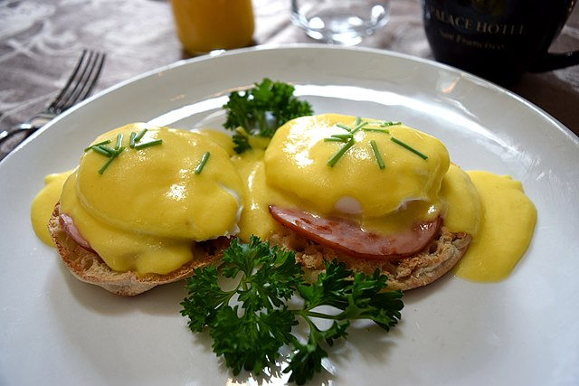

Eggs Benedict

Description
Eggs Benedict is a common American breakfast or brunch dish, consisting of two halves of an English muffin, each topped with Canadian bacon,[1] a poached egg, and hollandaise sauce. It was popularized in New York City.
Ingredients
- 1 tbsp white wine vinegar
- 2 egg yolks
- 150g butter, melted, cooled
- 1 tbsp lemon juice
- Salt and pepper, to taste
- 4 eggs
- 125g shaved ham
- 2 English muffins, cut in half
- Avocado, thinly sliced, to serve
Steps
- For hollandaise sauce, combine the vinegar and egg yolks in a food processor, very slowly adding the butter bit by bit. Add lemon juice and season with salt and pepper. Transfer to a bowl, cover and leave to sit.
- To poach the eggs, fill a saucepan with water to two-thirds full. Add a pinch of salt. Bring to a boil, then reduce to a medium-low heat. Stir the water until a whirlpool forms. Break the egg into a saucer, and then slide into the water. Cook, without stirring for 3-4 minutes, depending on desired consistency. Remove to a plate with a slotted spoon. Repeat with remaining eggs.
- Toast English muffins until golden brown. Top with ham, avocado and eggs. Drizzle with hollandaise sauce. Serve.